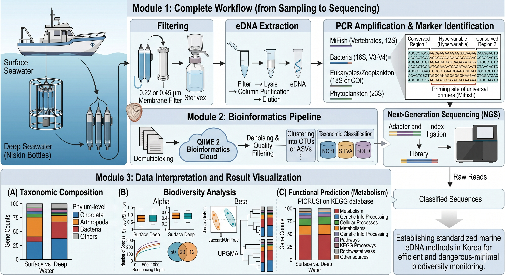
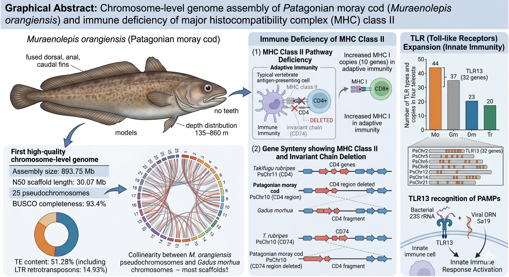
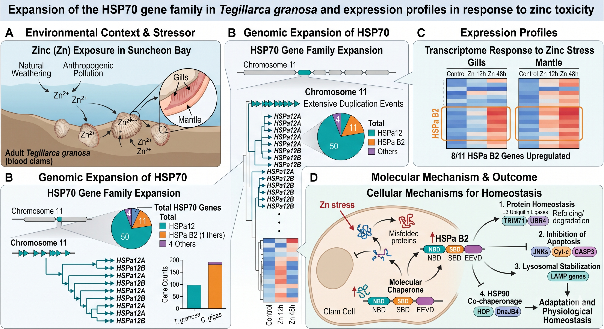
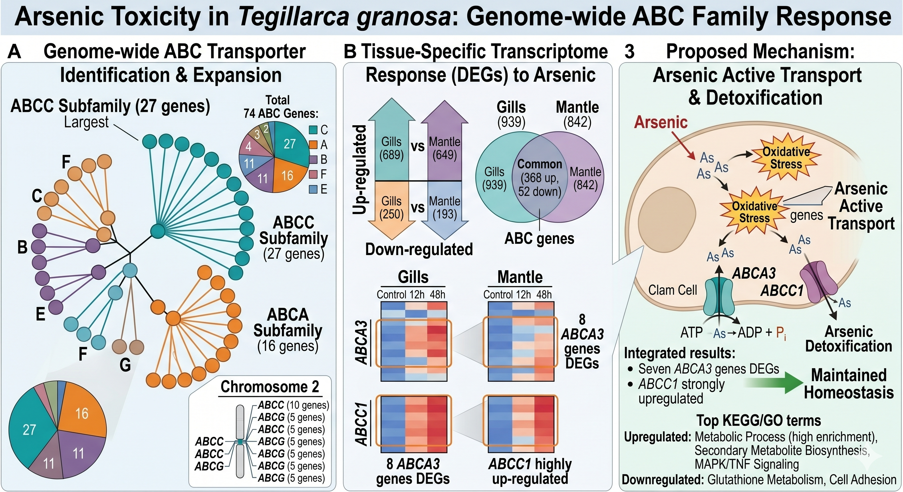

About Me
I am a dedicated biologist specializing in marine science, currently working as a Postdoctoral Associate in the department of Evolution, Ecology, and Behavior at the University of Illinois Urbana-Champaign under the guidance of Dr. Chris Cheng. My research focuses on marine genomics, environmental DNA, and the evolution of Antarctic fish using computational genomics.
I believe in lifelong learning, both inside and outside the lab. To stay energized, I love biking (a favorite routine from my days in Seoul), hitting the gym, and I have recently taken up tennis. I love traveling and learning new cultures too. I also enjoy spending time with my friends or unwinding with my Nintendo Switch 2.
One value that I place great importance on is maintaining a positive mindset and trusting in myself. I believe in steadfastly pursuing my own journey rather than comparing my progress to others.


Photos taken during my travels. Image Copyright © JK
Academic Experience
Current Position
Education
Research Interests
My research integrates genomics, bioinformatics, and environmental DNA to understand marine biodiversity, adaptation, and stress responses across diverse organisms and ecosystems.

Environmental DNA (eDNA)
Developing and applying eDNA metabarcoding pipelines for marine biodiversity monitoring, including seawater sampling, DNA extraction, PCR amplification with multiple markers (MiFish, 18S, COI, 16S, 23S), NGS, and bioinformatics analysis using QIIME 2.

Polar Genomics & Evolution
Constructing chromosome-level genome assemblies of Antarctic marine organisms. Investigating immune system evolution, MHC class II deficiency, and TLR expansion in polar fish, and comparative genomics for extreme environment adaptation.


Stress-Response & Toxicogenomics
Investigating heavy metal stress responses in marine invertebrates (T. granosa): HSP70 gene family expansion under zinc toxicity and ABC transporter-mediated arsenic detoxification, integrating genomics and transcriptomics.
Honors & Awards
Chromosome-level genome assembly of Patagonian moray cod (Muraenolepis orangiensis) and immune deficiency of MHC class II
Cell Stress and Chaperones, Vol. 29, Issue 1 https://doi.org/10.1016/j.cstres.2024.01.004
Ranked 1st among Ph.D. graduates, College of Life Sciences and Biotechnology
Reconstruction of the full-length transcriptome analysis using PacBio Iso-Seq provides transcript variants in the immune system of blood clam, Tegillarca granosa
Funding, Fellowships & Certifications
Detailed information on funding, fellowships, and certifications is available in the CV.
Publications
View my full list of peer-reviewed publications on a dedicated page.
Selected Conference Presentations
Detailed information including authors and presentation titles is available in the CV.
Professional Service
Undergraduate Research Symposium (Science and Technology)
Undergraduate Research Symposium (Cells and Molecules)
27th Annual GEEB (Graduate Students in Ecology and Evolutionary Biology) Symposium
Curriculum Vitae
You can download my full CV below
References are available upon request and can also be viewed in the CV.
Download Full CV